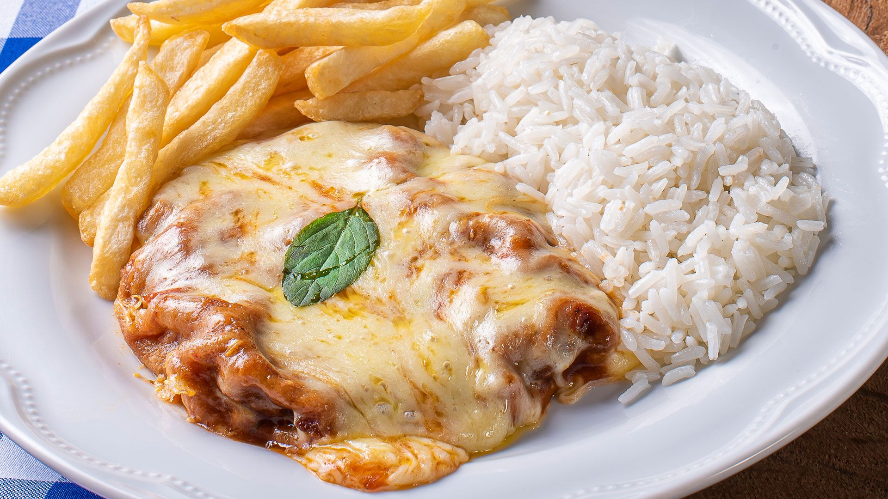
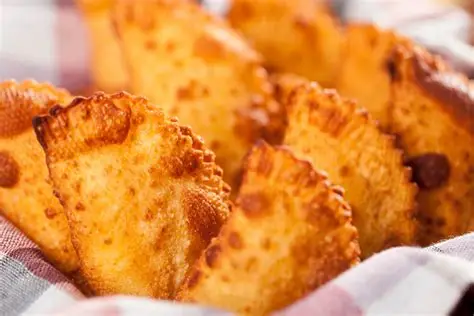
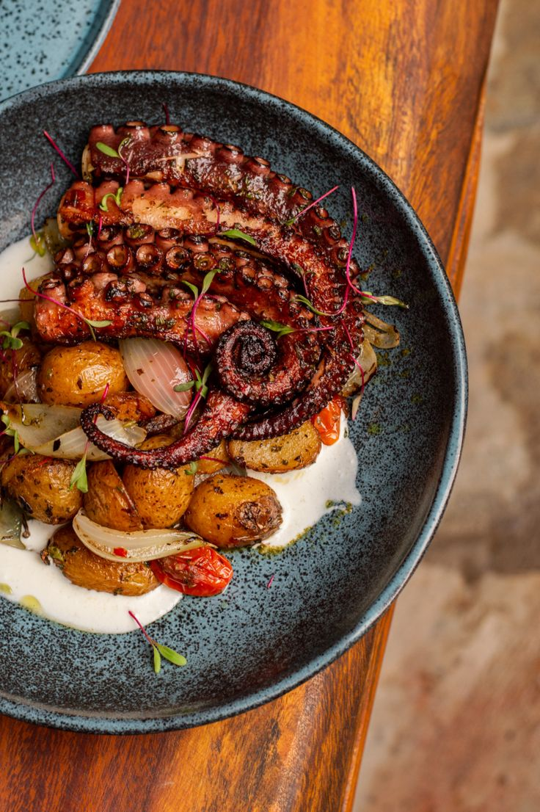
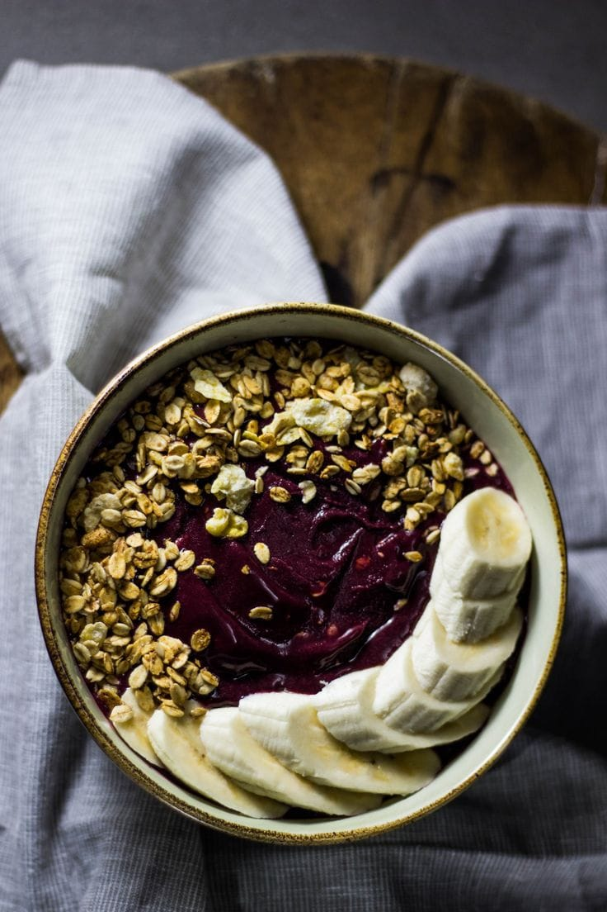
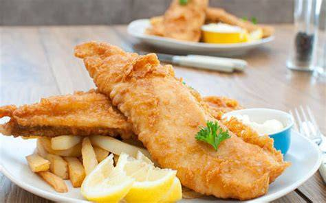
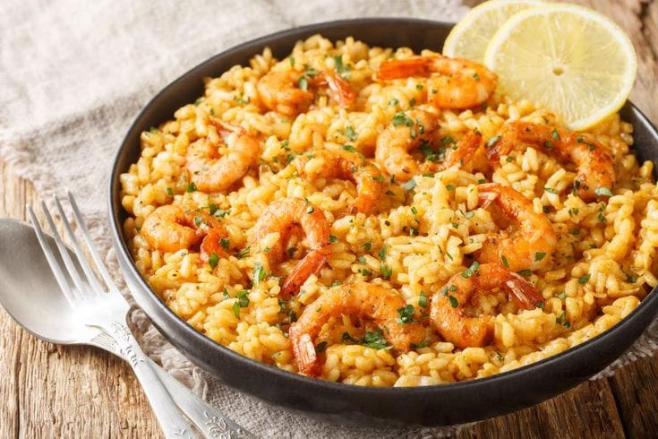
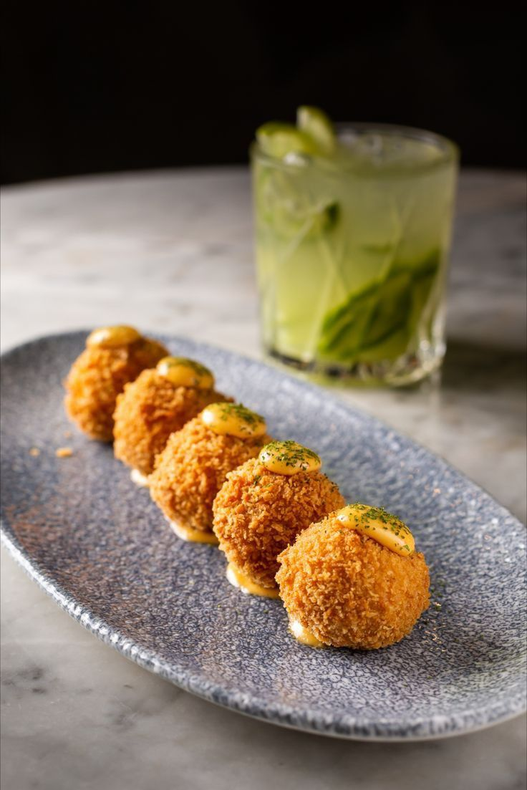
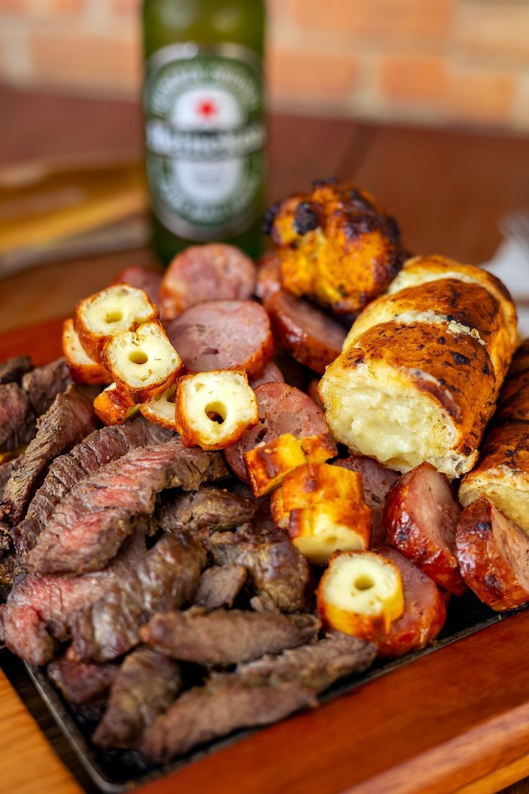
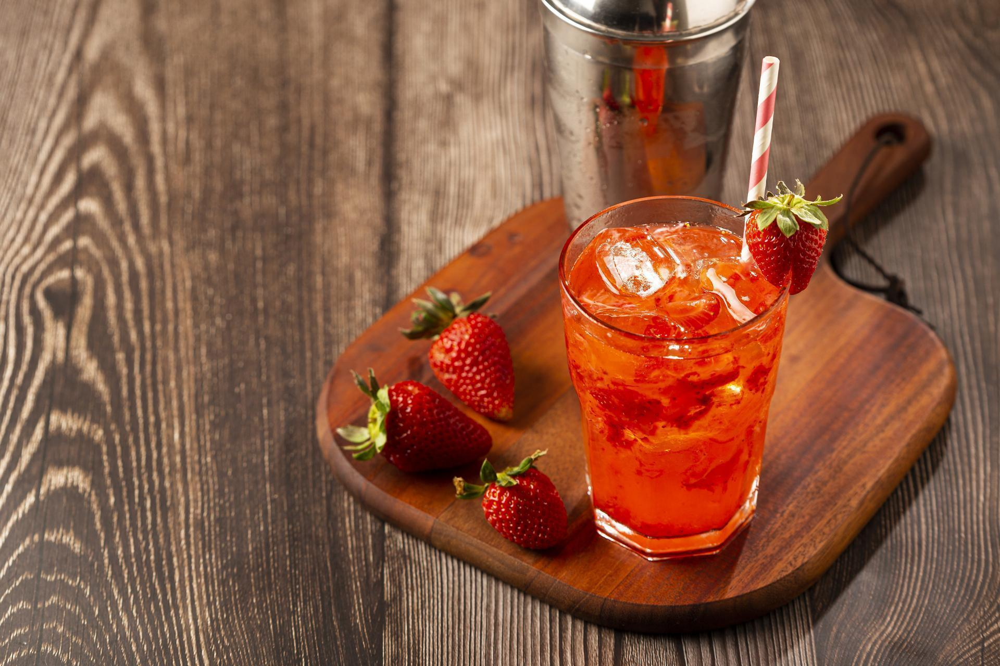
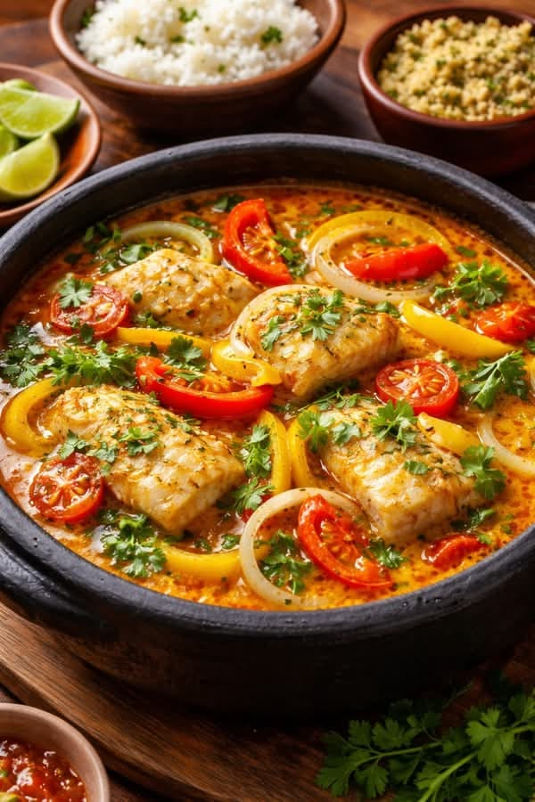

🍽️ Onde Comer
Opções recomendadas organizadas por proximidade.
*IMAGENS MERAMENTE ILUSTRATIVAS*.

Recanto do Sabor
📍 500mComida caseira, pratos feitos fartos e self-service no dia a dia.
📍 Como Chegar
Malibu Mazinho Gastrobar
📍 400mGastrobar aconchegante com vista para o canal, ótimo para drinks, petiscos e refeições.
📍 Como Chegar
Small Riders Surf House
📍 350mHambúrgueres, pizzas, drinks, açaí e clima descontraído de surfe.
📍 Como Chegar
Baru
📍 600mQuiosque/restaurante com frutos do mar frescos e coquetéis na orla.
📍 Como Chegar
Rico Point Beach
📍 300mPonto tradicional de surfistas com açaí, tapiocas e lanches saudáveis.
📍 Como Chegar
Espaço / Restaurante Cocotão
📍 1.0 kmTradicional churrasco, carnes na brasa e pratos bem servidos.
📍 Como Chegar
Àdorê
📍 1.1 kmGastronomia contemporânea, pratos executivos sofisticados e sobremesas deliciosas.
📍 Como Chegar
Restaurante Bistral
📍 1.2 kmRestaurante aconchegante com pratos executivos e petiscos.
📍 Como Chegar
Recreio Carioca
📍 1.5 kmBeco gastronômico com chopp gelado, porções e clima boêmio.
📍 Como Chegar
Na Brasa Columbia
📍 1.8 kmGaleto na brasa, carnes assadas e acompanhamentos tradicionais.
📍 Como Chegar
Salinas Arte e Sal
📍 2.2 kmBuffet variado com pé na areia na orla do Recreio.
📍 Como Chegar
Stadium Steakhouse
📍 2.5 kmSports bar espaçoso para transmissão de jogos, carnes e chopp.
📍 Como Chegar
Casuarina Recreio
📍 2.7 kmRestaurante com foco em pizzas, massas e ambiente familiar.
📍 Como Chegar
Mirante da Prainha
📍 3.5 kmFrutos do mar e pratos típicos com vista panorâmica incrível para o mar.
📍 Como Chegar